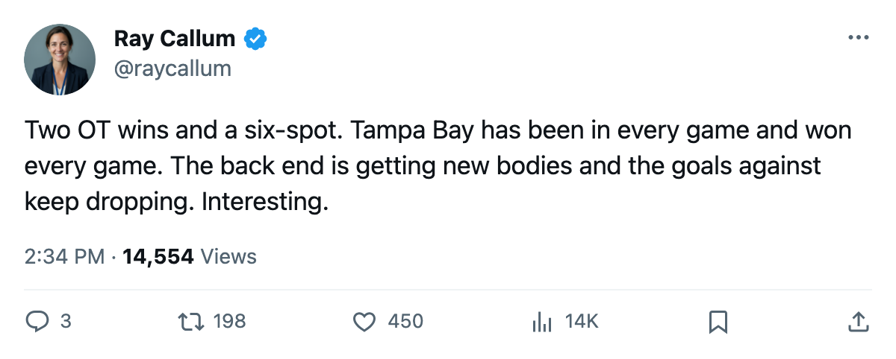

RECAP: Lightning 6, Thrashers 1 — Two overtime wins and a 6-goal night make it 3-0-0
Tampa Bay scored 13 in 3 games, won 2 of 3 in the extra frame, and added depth from Colorado in a trade the desk confirms
 Ray CallumSenior correspondent · Home Ice Network
Ray CallumSenior correspondent · Home Ice Network
Tampa Bay beat Atlanta 6-1 at home on October 18 to start the season 3-0-0. The  Tampa Bay Lightning scored 13 goals and allowed 6 across 3 games, and 2 of the 3 wins went to overtime.
Tampa Bay Lightning scored 13 goals and allowed 6 across 3 games, and 2 of the 3 wins went to overtime.
The pattern held before Saturday. The Lightning opened 4-3 in overtime at  Florida Panthers on October 10, beat
Florida Panthers on October 10, beat  Carolina Hurricanes 3-2 in overtime at home on October 12, and then broke the game open against
Carolina Hurricanes 3-2 in overtime at home on October 12, and then broke the game open against  Atlanta Thrashers in regulation. Atlanta managed 17 shots. Tampa Bay fired 26.
Atlanta Thrashers in regulation. Atlanta managed 17 shots. Tampa Bay fired 26.
 Nikolai Khabibulin92 started all 3 and is 3-0-0 with no shutouts, meaning Tampa Bay has scored the go-ahead goal in every contest. Last season he went 42-23-3 in 67 starts.
Nikolai Khabibulin92 started all 3 and is 3-0-0 with no shutouts, meaning Tampa Bay has scored the go-ahead goal in every contest. Last season he went 42-23-3 in 67 starts.
The  Colorado Avalanche trade, filed October 15 and logged by the desk with news-level confidence, sends Riku Hahl and Yury Stashan to Tampa Bay for Lance Ward, Arron Asham, and Tim Taylor. Five players and one pick changed hands; the filed description does not identify the pick.
Colorado Avalanche trade, filed October 15 and logged by the desk with news-level confidence, sends Riku Hahl and Yury Stashan to Tampa Bay for Lance Ward, Arron Asham, and Tim Taylor. Five players and one pick changed hands; the filed description does not identify the pick.
The blue line shifted against Atlanta.  Hans Jonsson71 and Chris O'Sullivan71 were scratched.
Hans Jonsson71 and Chris O'Sullivan71 were scratched.  Marek Malik77 and
Marek Malik77 and  Dick Tarnstrom77 dressed for the first time this season. Malik skated the 1 and the 2 on both power-play units. Tarnstrom carried second-unit minutes on the man advantage.
Dick Tarnstrom77 dressed for the first time this season. Malik skated the 1 and the 2 on both power-play units. Tarnstrom carried second-unit minutes on the man advantage.
That pairing tells you what the coaching staff wants from the back end. Tarnstrom is the puck-mover Malik protects. The Lightning allowed 3 goals to Florida Panthers, 2 to Carolina Hurricanes, and 1 to Atlanta. The goals against dropped every game in the sequence.
Tampa Bay Lightning sits 5th in the Eastern Conference with 6 points from 3 games, one slot ahead of the 8th-place line. They travel to  New York Rangers on October 21 for a first meeting this season.
New York Rangers on October 21 for a first meeting this season.
